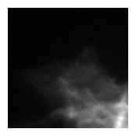
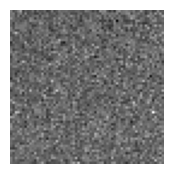
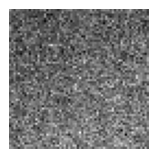
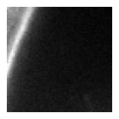
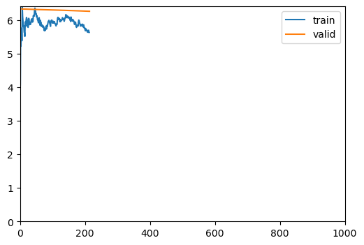
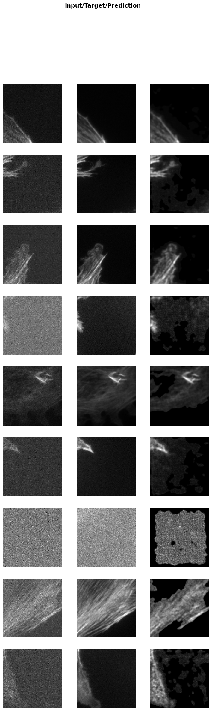

from bioMONAI.data import *
from bioMONAI.transforms import *
from bioMONAI.core import *
from bioMONAI.core import Path
from bioMONAI.data import get_image_files, get_target, RandomSplitter
from bioMONAI.nets import BasicUNet, DynUNet
from bioMONAI.losses import *
from bioMONAI.losses import SSIMLoss
from bioMONAI.metrics import *
from bioMONAI.datasets import download_dataset_from_csv
from monai.utils import set_determinism
set_determinism(0)Tutorial Denoising
denoising
import warnings
warnings.filterwarnings("ignore")device = get_device()
print(device)cudaDownload Data
# Specify the directory where you want to save the downloaded files
output_directory = "../_data/FMD"
# Define the base URL for the dataset
base_url = 'https://s3.ap-northeast-1.wasabisys.com/gigadb-datasets/live/pub/10.5524/100001_101000/100888/'
# Download only the first two images
download_dataset_from_csv('./data_examples/FMD_dataset_info.csv', base_url, output_directory, rows=[0,1])The dataset has been successfully downloaded and saved to: ../_data/FMDSorting & Preprocessing data
The all images are in the same file, so we are going to separate them.
# extract images from stack and save them in X and y folders
X_path = '../_data/FMD/04-actin-20x-noise1/X'
y_path = '../_data/FMD/04-actin-20x-noise1/y'
# extract_substacks('../_data/FMD/04-actin-20x-noise1/actin-20x-noise1-lowsnr.tif', output_dir=X_path, indices={'Z': range(100)}, split_dimension="Z")
# extract_substacks('../_data/FMD/04-actin-20x-noise1/actin-20x-noise1-highsnr.tif', output_dir=y_path, indices={'Z': range(100)}, split_dimension="Z")Create Dataloader
bs = 32
patch_size = 64
itemTfms = [ScaleIntensity(min=0.0, max=1.0), RandCropND(patch_size), RandRot90(prob=.5), RandFlip(prob=0.5)]
batchTfms = []
get_target_fn = get_target(y_path, same_filename=False, target_file_prefix="actin-20x-noise1-highsnr", signal_file_prefix="actin-20x-noise1-lowsnr")
data = BioDataLoaders.from_folder(
X_path,
get_target_fn,
valid_pct=0.2,
seed=42,
item_tfms=itemTfms,
batch_tfms=batchTfms,
show_summary=False,
bs = bs,
)
# print length of training and validation datasets
print('train images:', len(data.train_ds.items), '\nvalidation images:', len(data.valid_ds.items))train images: 80
validation images: 20data.show_batch(max_n=4)



Load and train a 2D model
# from bioMONAI.nets import Deeplab, DeeplabConfig
from monai.networks.nets import BasicUNet, AttentionUnet, DynUNet, UNet, BasicUNet# model = UNet(spatial_dims=2, in_channels=1, out_channels=1, channels=(16, 32, 64, 128, 256),strides=(2, 2, 2, 2), num_res_units=2).model
# model = AttentionUnet(spatial_dims=2, in_channels=1, out_channels=1, channels=(16, 32, 64),strides=(1, 1))
# model = DynUNet(spatial_dims=2, in_channels=1, out_channels=1, strides=(1, 2, 2),kernel_size=(3, 3, 3), upsample_kernel_size=(2, 2), res_block=True) # it tends to create hot pixels
# model = BasicUNet(spatial_dims=3, in_channels=1, out_channels=1)
# config_2d = DeeplabConfig(
# dimensions=3,
# in_channels=1,
# out_channels=1,
# backbone="resnet10",
# aspp_dilations=[1]
# )
# model = Deeplab(config_2d)# model = UNet(spatial_dims=2, in_channels=1, out_channels=1, channels=(32, 64, 128, 256),strides=(1, 2, 2), num_res_units=2)
model = DynUNet(spatial_dims=2, in_channels=1, out_channels=1, strides=(1, 2, 2),kernel_size=(3, 3, 3), upsample_kernel_size=(2, 2), res_block=True)
loss = CombinedLoss(alpha=0.00001, beta=0.00001)
metrics = [MSEMetric(), SSIMMetric(2)]
trainer = fastTrainer(data, model, loss_fn=loss, metrics=metrics, show_summary=False)trainer.fit_flat_cos(500)
21.40% [107/500 10:31<38:37]
| epoch | train_loss | valid_loss | MSE | SSIM | time |
|---|---|---|---|---|---|
| 0 | 4.070987 | 6.336255 | 533099.437500 | 0.000004 | 00:06 |
| 1 | 5.222836 | 6.333928 | 532867.187500 | 0.000009 | 00:05 |
| 2 | 5.755714 | 6.332205 | 532695.562500 | 0.000014 | 00:05 |
| 3 | 6.405628 | 6.330930 | 532568.437500 | 0.000019 | 00:05 |
| 4 | 5.998947 | 6.329928 | 532468.937500 | 0.000025 | 00:05 |
| 5 | 5.835889 | 6.329081 | 532384.687500 | 0.000029 | 00:05 |
| 6 | 5.635516 | 6.328302 | 532307.125000 | 0.000033 | 00:05 |
| 7 | 5.514431 | 6.327571 | 532234.500000 | 0.000036 | 00:05 |
| 8 | 5.822437 | 6.326866 | 532164.187500 | 0.000038 | 00:05 |
| 9 | 6.003629 | 6.326167 | 532094.500000 | 0.000039 | 00:05 |
| 10 | 6.045775 | 6.325456 | 532023.500000 | 0.000040 | 00:05 |
| 11 | 5.809647 | 6.324762 | 531954.312500 | 0.000041 | 00:05 |
| 12 | 5.782960 | 6.324073 | 531885.500000 | 0.000041 | 00:05 |
| 13 | 6.052497 | 6.323369 | 531815.250000 | 0.000042 | 00:05 |
| 14 | 5.863855 | 6.322690 | 531747.437500 | 0.000043 | 00:05 |
| 15 | 5.909391 | 6.322042 | 531682.812500 | 0.000044 | 00:05 |
| 16 | 5.906106 | 6.321394 | 531618.250000 | 0.000044 | 00:05 |
| 17 | 6.013095 | 6.320724 | 531551.375000 | 0.000045 | 00:05 |
| 18 | 5.942938 | 6.320060 | 531485.062500 | 0.000047 | 00:05 |
| 19 | 5.944413 | 6.319421 | 531421.375000 | 0.000048 | 00:05 |
| 20 | 6.131573 | 6.318786 | 531358.062500 | 0.000049 | 00:05 |
| 21 | 6.144696 | 6.318151 | 531294.750000 | 0.000051 | 00:05 |
| 22 | 6.308874 | 6.317509 | 531230.812500 | 0.000052 | 00:05 |
| 23 | 6.300434 | 6.316866 | 531166.687500 | 0.000054 | 00:05 |
| 24 | 6.173300 | 6.316253 | 531105.562500 | 0.000056 | 00:05 |
| 25 | 6.095244 | 6.315658 | 531046.187500 | 0.000057 | 00:05 |
| 26 | 6.091689 | 6.315061 | 530986.812500 | 0.000059 | 00:05 |
| 27 | 6.032594 | 6.314481 | 530928.937500 | 0.000060 | 00:05 |
| 28 | 5.917692 | 6.313921 | 530873.187500 | 0.000061 | 00:05 |
| 29 | 6.072333 | 6.313350 | 530816.187500 | 0.000062 | 00:05 |
| 30 | 5.954468 | 6.312800 | 530761.375000 | 0.000063 | 00:05 |
| 31 | 5.991159 | 6.312247 | 530706.187500 | 0.000064 | 00:05 |
| 32 | 5.922210 | 6.311689 | 530650.500000 | 0.000065 | 00:05 |
| 33 | 5.837179 | 6.311150 | 530596.687500 | 0.000065 | 00:05 |
| 34 | 5.820147 | 6.310595 | 530541.187500 | 0.000065 | 00:05 |
| 35 | 5.832440 | 6.310044 | 530486.312500 | 0.000066 | 00:05 |
| 36 | 5.799702 | 6.309497 | 530431.812500 | 0.000068 | 00:05 |
| 37 | 5.683123 | 6.308974 | 530379.812500 | 0.000070 | 00:05 |
| 38 | 5.687276 | 6.308444 | 530327.000000 | 0.000072 | 00:05 |
| 39 | 5.717222 | 6.307885 | 530271.250000 | 0.000073 | 00:05 |
| 40 | 5.785417 | 6.307319 | 530214.812500 | 0.000074 | 00:05 |
| 41 | 5.844336 | 6.306741 | 530157.187500 | 0.000075 | 00:05 |
| 42 | 5.860811 | 6.306172 | 530100.500000 | 0.000076 | 00:05 |
| 43 | 5.960816 | 6.305597 | 530043.187500 | 0.000078 | 00:05 |
| 44 | 5.992593 | 6.305042 | 529987.937500 | 0.000080 | 00:05 |
| 45 | 5.938150 | 6.304508 | 529934.687500 | 0.000082 | 00:05 |
| 46 | 5.843554 | 6.303956 | 529879.687500 | 0.000083 | 00:05 |
| 47 | 5.959374 | 6.303365 | 529820.687500 | 0.000084 | 00:06 |
| 48 | 5.984555 | 6.302729 | 529757.125000 | 0.000083 | 00:06 |
| 49 | 5.939087 | 6.302119 | 529696.187500 | 0.000084 | 00:05 |
| 50 | 5.947570 | 6.301532 | 529637.812500 | 0.000086 | 00:06 |
| 51 | 5.914626 | 6.300964 | 529581.437500 | 0.000090 | 00:06 |
| 52 | 5.914648 | 6.300416 | 529527.000000 | 0.000093 | 00:06 |
| 53 | 5.905846 | 6.299870 | 529472.875000 | 0.000096 | 00:06 |
| 54 | 5.880083 | 6.299266 | 529412.562500 | 0.000098 | 00:06 |
| 55 | 5.826917 | 6.298632 | 529349.250000 | 0.000098 | 00:06 |
| 56 | 5.885589 | 6.297989 | 529284.937500 | 0.000097 | 00:06 |
| 57 | 5.996208 | 6.297363 | 529222.437500 | 0.000098 | 00:06 |
| 58 | 6.083018 | 6.296720 | 529158.500000 | 0.000102 | 00:06 |
| 59 | 6.045780 | 6.296102 | 529097.250000 | 0.000106 | 00:06 |
| 60 | 6.050081 | 6.295480 | 529035.562500 | 0.000110 | 00:06 |
| 61 | 5.951171 | 6.294871 | 528975.125000 | 0.000115 | 00:06 |
| 62 | 5.952217 | 6.294175 | 528905.875000 | 0.000118 | 00:06 |
| 63 | 5.995735 | 6.293470 | 528835.687500 | 0.000120 | 00:05 |
| 64 | 6.003626 | 6.292778 | 528766.687500 | 0.000122 | 00:06 |
| 65 | 6.073109 | 6.292089 | 528698.187500 | 0.000125 | 00:06 |
| 66 | 6.029458 | 6.291424 | 528632.000000 | 0.000128 | 00:05 |
| 67 | 6.012118 | 6.290781 | 528568.187500 | 0.000132 | 00:05 |
| 68 | 5.991516 | 6.290123 | 528502.812500 | 0.000137 | 00:05 |
| 69 | 6.069472 | 6.289379 | 528428.937500 | 0.000141 | 00:05 |
| 70 | 6.160852 | 6.288650 | 528356.500000 | 0.000145 | 00:05 |
| 71 | 6.085344 | 6.287923 | 528284.437500 | 0.000150 | 00:05 |
| 72 | 6.123071 | 6.287279 | 528220.687500 | 0.000157 | 00:05 |
| 73 | 6.078063 | 6.286593 | 528152.625000 | 0.000162 | 00:05 |
| 74 | 6.066698 | 6.285842 | 528077.687500 | 0.000163 | 00:05 |
| 75 | 6.085775 | 6.285092 | 528002.937500 | 0.000164 | 00:05 |
| 76 | 6.066963 | 6.284398 | 527933.875000 | 0.000168 | 00:05 |
| 77 | 6.001037 | 6.283757 | 527870.312500 | 0.000173 | 00:05 |
| 78 | 6.090947 | 6.283096 | 527804.562500 | 0.000176 | 00:05 |
| 79 | 6.002438 | 6.282404 | 527736.000000 | 0.000180 | 00:05 |
| 80 | 5.977525 | 6.281716 | 527667.500000 | 0.000183 | 00:05 |
| 81 | 5.965565 | 6.281002 | 527596.500000 | 0.000187 | 00:05 |
| 82 | 5.980692 | 6.280287 | 527525.500000 | 0.000191 | 00:05 |
| 83 | 5.923758 | 6.279607 | 527458.000000 | 0.000196 | 00:05 |
| 84 | 5.938051 | 6.278921 | 527389.875000 | 0.000200 | 00:05 |
| 85 | 5.939092 | 6.278193 | 527317.312500 | 0.000202 | 00:05 |
| 86 | 5.816461 | 6.277519 | 527250.562500 | 0.000208 | 00:05 |
| 87 | 5.809807 | 6.276844 | 527183.375000 | 0.000210 | 00:05 |
| 88 | 5.848969 | 6.276102 | 527108.875000 | 0.000208 | 00:05 |
| 89 | 5.824127 | 6.275394 | 527038.437500 | 0.000210 | 00:05 |
| 90 | 6.000526 | 6.274634 | 526962.687500 | 0.000212 | 00:05 |
| 91 | 5.933365 | 6.273903 | 526890.250000 | 0.000219 | 00:05 |
| 92 | 5.869541 | 6.273174 | 526817.937500 | 0.000222 | 00:05 |
| 93 | 5.851740 | 6.272421 | 526742.750000 | 0.000224 | 00:05 |
| 94 | 5.850019 | 6.271626 | 526662.812500 | 0.000220 | 00:05 |
| 95 | 5.821598 | 6.270861 | 526586.687500 | 0.000222 | 00:05 |
| 96 | 5.869924 | 6.270109 | 526512.312500 | 0.000230 | 00:05 |
| 97 | 5.792652 | 6.269459 | 526448.875000 | 0.000246 | 00:05 |
| 98 | 5.811627 | 6.268622 | 526365.375000 | 0.000247 | 00:05 |
| 99 | 5.765670 | 6.267822 | 526285.250000 | 0.000244 | 00:05 |
| 100 | 5.685064 | 6.267094 | 526212.875000 | 0.000249 | 00:05 |
| 101 | 5.682150 | 6.266403 | 526144.875000 | 0.000258 | 00:05 |
| 102 | 5.713498 | 6.265635 | 526068.500000 | 0.000262 | 00:05 |
| 103 | 5.690476 | 6.264791 | 525983.937500 | 0.000260 | 00:05 |
| 104 | 5.680092 | 6.264009 | 525906.812500 | 0.000270 | 00:05 |
| 105 | 5.697519 | 6.263308 | 525838.687500 | 0.000290 | 00:05 |
| 106 | 5.633708 | 6.262571 | 525766.250000 | 0.000302 | 00:05 |
0.00% [0/2 00:00<?]

trainer.show_results(cmap='gray')
# trainer.save('tmp-model')Test data
Evaluate the performance of the selected model on unseen data. It’s important to not touch this data until you have fine tuned your model to get an unbiased evaluation!